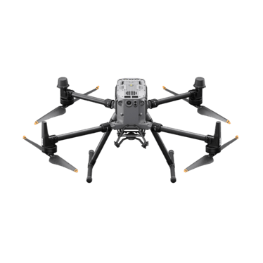

Matrice 300 / 350 RTK — the previous generation
Before the dock-in-a-box drones we use today, DJI's flagship enterprise aircraft was a big, pilot-flown workhorse: the Matrice 300 RTK and its successor the Matrice 350 RTK. You won't fly DIMS on one — but you'll meet them in industry footage and reference data, so here's the context.
Why this chapter exists
The Matrice 4TD in chapter 08 is the drone DIMS actually commands today — it lives inside a Dock 3 and flies by itself. But the 4TD is the new generation. For five years before it, the enterprise drone everyone in the inspection world used was the Matrice 300 RTK (launched 2020) and then the upgraded Matrice 350 RTK (2023).
Interns should recognise these because they are everywhere: most industry inspection videos, training materials, and a lot of CNS's own reference footage were shot with an M300 or M350. Think of this chapter as "the previous generation, for context" — so when you see one, you know what it is and how it differs from what we fly now.
If the Matrice 4TD + Dock 3 is a self-driving car that lives in its own garage and drives itself, the Matrice 350 is the previous-generation luxury truck: powerful, big, carries a lot — but a person has to sit at the wheel and drive it. Same maker, same quality, totally different way of operating.
The one big difference: pilot-flown, not dock-autonomous
This is the headline. The M300/M350 are pilot-flown. A trained operator stands on site holding a physical controller, watches the camera feed on the controller's screen, and flies the aircraft by hand (or runs a pre-planned route they trigger manually). Fleets are managed from DJI's FlightHub cloud, and the pilot uses the DJI Pilot app on the controller.
There is no dock by default — the drone is carried in a case, set up on the ground, launched, flown, landed, and packed away by people. Contrast that with the 4TD, which sits in a weatherproof dock on a rooftop and launches itself with nobody on site. That shift — from "a pilot and a case" to "a box that flies itself" — is the whole reason DIMS exists.
M300/M350 = a human pilot flies it from a handheld controller. M4TD + Dock 3 = it flies itself from a dock. DIMS is built around the autonomous, dock-based model — the M350 is the manual predecessor.
Meet the Matrice 350 RTK

Watch DJI's official intro to get a feel for its size and the modular cameras it carries:
Key specs (Matrice 350 RTK)
These are approximate, rounded figures from DJI's official M350 RTK page. Treat them as "the right order of magnitude," not exact lab numbers.
| Spec | Matrice 350 RTK (approx.) | Why it matters |
|---|---|---|
| Max flight time | up to ~55 min | Long missions over big sites without landing to swap. |
| Batteries | Dual hot-swappable (TB60 / TB65) | Two packs at once; swap one without powering down. |
| Max payload | ~2.7 kg, up to 3 payloads | Heavy-lift: carry several sensors on one flight. |
| Weather resistance | IP45 rated | Flies in rain and dust — built for the field. |
| Obstacle sensing | 6-directional | Detects obstacles all around for safer manual flight. |
| Transmission | OcuSync / O3 Enterprise, ~15 km | Strong, long-range video + control link. |
| Positioning | Built-in RTK | Centimetre-level GPS for repeatable, precise routes. |
RTK (Real-Time Kinematic) is a way of correcting GPS down to centimetre accuracy instead of the usual several metres. That's why these aircraft have "RTK" in their name — precise positioning is essential for flying the exact same inspection route every time.
The Zenmuse payload ecosystem
The M300/M350's superpower is that the camera is not built in — it's modular. The aircraft has a standardised mount, and you clip on whichever Zenmuse payload (DJI's family of swappable sensors) the job needs. A gimbal — the motorised cradle that keeps the camera steady and pointed — holds each one.
Common Zenmuse payloads you'll hear about:
- H20 / H20T — multi-sensor cameras combining a zoom camera, a wide camera, a laser rangefinder, and (on the H20T) a thermal camera.
- P1 — a high-resolution full-frame camera for photogrammetry (building 3D models from overlapping photos).
- L1 / L2 — LiDAR units that scan the world with laser pulses to capture precise 3D point clouds.
We go deep on what each sensor actually does — RGB, thermal, LiDAR, and more — in chapter 10 (Sensors & Payloads). For now just hold onto the idea: one airframe, many interchangeable eyes.
Why heavy-lift + multiple payloads matter
Carrying ~2.7 kg and up to three payloads at once sounds like a spec-sheet brag, but it's genuinely useful for inspection. On a single flight you can mount, say, a thermal camera and a high-zoom camera and a LiDAR, and capture all three data types in one pass instead of flying three separate missions. For big or hard-to-reach assets — power lines, large facilities, structures CNS studies for tower-crane inspection — that capacity saves time and battery, and keeps every sensor's data perfectly aligned because it was all captured together.
Want the deep version? M350 vs the Matrice 4 series
The Matrice 4 series (including our 4TD) went a different direction from the M350. Instead of a heavy airframe with bolt-on Zenmuse modules, the M4 is smaller and lighter with its multi-sensor camera built in, and — crucially — it's designed to live in a Dock 3 and operate fully autonomously via DJI's Cloud API. So the trade is roughly: the M350 wins on raw lift and swappable big sensors and flexibility for a skilled pilot; the M4TD wins on autonomy, smaller footprint, dock-based 24/7 operation, and being directly drivable by software like DIMS. They serve different operating models, which is exactly why DIMS targets the dock-based one.
When you read DIMS docs or watch a demo, the live drone is the Matrice 4TD. If you see a bigger drone with a separate handheld controller and a clip-on camera in reference footage, that's an M300/M350 — the previous generation, here for context, not what DIMS flies.
"The Matrice 300 RTK (2020) and Matrice 350 RTK (2023) were DJI's previous-generation enterprise flagships — big, heavy-lift, weather-resistant drones that a human pilot flies from a handheld controller and manages in FlightHub. They carry swappable Zenmuse payloads (H20T thermal, P1 photogrammetry, L1/L2 LiDAR), up to three at once, with ~55-minute flights and centimetre-level RTK positioning. DIMS doesn't fly them — it's built for the dock-autonomous Matrice 4TD — but they're the common industry reference hardware and the predecessor to what we use today."
Next we open up the sensors themselves — what RGB, thermal, LiDAR, and multispectral payloads actually see, and why each one matters for inspection.
Matrice 350 RTK: overview · downloads/manual. Matrice 300 RTK: downloads. More in chapter 20.